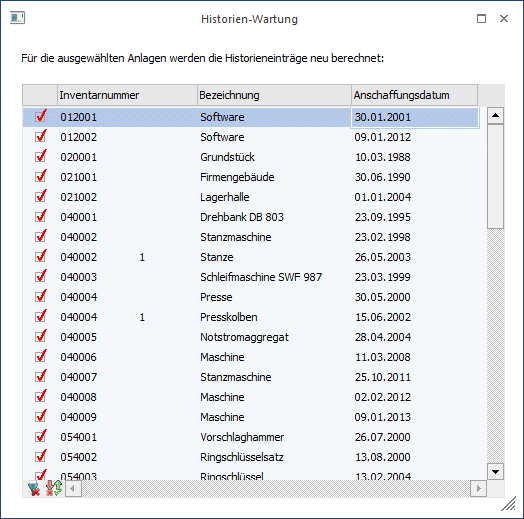
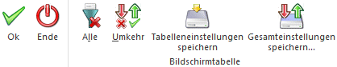

In diesem Menüpunkt können die Historieneinträge von Wirtschaftsgütern kontrolliert und neu berechnet werden. Die Historienwartung muss durchgeführt werden, wenn mit der Funktion „Vorjahresmandanten importieren“ Vorjahre hinzugefügt oder ein Mandant von Version 7.4 auf Version 8 aktualisiert wurde.
Die Historien-Wartung rechnet alle Wirtschaftsgüter ab dem ältesten offenen Wirtschaftsjahr neu durch. Bereits durch die Jahresabschreibung festgeschriebene Historieneinträge bleiben unberührt.
Achtung
Bei Wirtschaftsgütern, die nicht das Kennzeichen "keine AfA" hinterlegt haben und im Feld "Jahres-AfA" einen Wert von 0,00 eingetragen haben, wird im Zuge der Historienwartung der Jahresabschreibungsbetrag anhand von Nutzungsdauer und Anschaffungswert neu berechnet.

Buttons

Ø OK
Die Historien-Wartung wird ausgeführt.
Ø Ende
Die Historien-Wartung wird ohne eine Nachfrage geschlossen.
Ø Alle
Es werden alle Wirtschaftsgüter selektiert
Ø Umkehr
Die aktuelle Selektion wird umgekehrt.
Ø Tabelleneinstellungen speichern
Die Spalten einer Tabelle können grundsätzlich an beliebige Positionen verschoben, bzw. in der Breite entsprechend angepasst werden. Durch Anwahl des Buttons "Tabelleneinstellungen speichern" werden die Einstellungen benutzerspezifisch gespeichert und bei dem nächsten Aufruf des Programmpunktes wieder vorgeschlagen.
Ø Gesamteinstellungen speichern
Im Gegensatz zu "Tabelleneinstellungen speichern" können mit "Gesamteinstellungen speichern" mehrere Tabellenaufbauten gespeichert und nach Wunsch geladen werden. Zusätzlich werden Sonderfunktionen der Tabelle (z.B. "Spalte gruppieren") ebenfalls bei der Speicherung bedacht.
Achtung - Bei Beginn der Anlagenbuchhaltung nicht im ältesten, offenen Wirtschaftsjahr
Beispiel: Im Jahr 2013 wird mit der ANBU begonnen und die Anlagegüter mit den entsprechenden Vortragswerten per 01.01.2013 erfasst oder importiert, obwohl noch das Jahr 2012 offen ist. Wenn im alten Wirtschaftsjahr 2012 die Historienwartung angewählt wird oder ein Anlagegut mit ok gespeichert wird, wird auch eine AfA-Zeile für 2012 in der Entwicklung angelegt.
Der Buchwert wird hierbei aber nicht verändert und die ANBU- Werte sind nicht mehr korrekt. Die Historienwartung wird ab dem ersten, ältesten Wirtschaftsjahr ohne Jahresabschreibung durchgeführt. Daher muss, wenn die ANBU nicht im ältesten, offenen Wirtschaftsjahr eines Mandanten eingerichtet wird, für das alte Jahr erst die Jahresabschreibung durchgeführt werden - auch wenn keine Werte dabei berechnet werden. Wichtig ist, dass das Datum für die letzte FIBU-AfA im Anlagenparameter gespeichert wird.